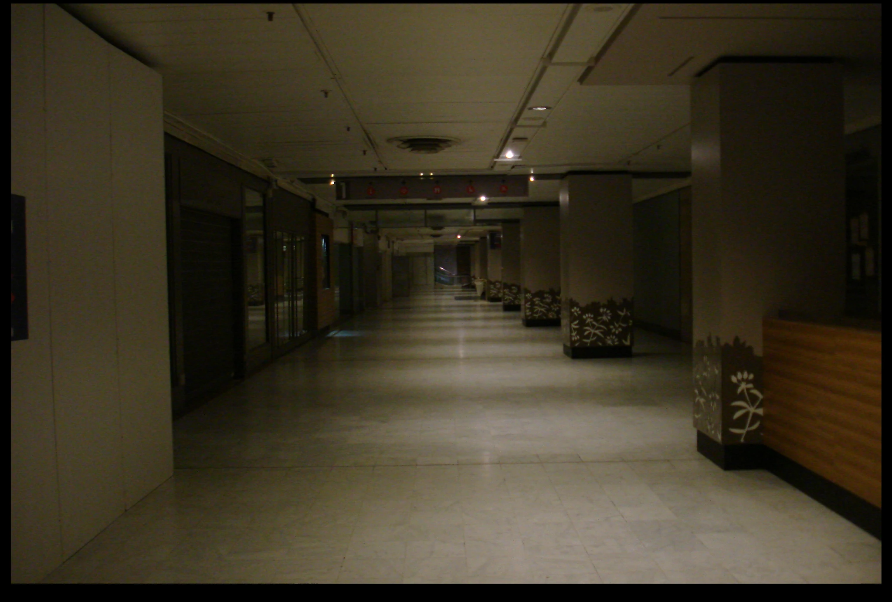

Field Studies
How were these worlds made? What survives when the futures they promised change? What is worth carrying forward?
Dongtan
New Town
Growth, corporate urbanism and the fabrication of everyday life.
Nakano
Broadway
An enduring commercial interior and its changing cultures.

Maine
Montparnasse
An inherited retail architecture and a possible civic future.
More worlds,
more questions.
Visit the atlas for the full evolving inventory.
RESEARCH METHOD / 01
Each site is approached through its architecture, history, economy and lived experience. Archive research and spatial surveys meet photography, interviews, scans, film and sound.
We compare spaces that continue to thrive, adapt, decline or disappear. Being listed in the atlas does not mean a site has already received a full field study.
RESEARCH QUESTIONS / 02
Production and obsolescence. How do architectures of prosperity come into being, and what determines their trajectories over time?
Ordinary heritage and memory. How can the material, social and sensory histories of everyday architecture be documented, interpreted and transmitted?
These are evolving research directions, not announcements of an established university programme or awarded doctoral positions.